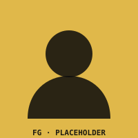

Technology for the NEW generation.
Twelve companies. One spine. NewGen is what happens when the best silicon, optics, sound, materials, machines, cooling, and light in the world stop shipping parts to each other — and start being one thing.
"We don't integrate vertically because it's efficient. We do it because a chain of vendors can only ever agree on the average. We're not here for the average."
— Francis Gabriel D. Robledo, Spearhead of Product Design & Philosophy
Not "partnership." Not "ecosystem." Ownership of the whole pipeline. The photon leaves a scene, hits a Sony hexa-stacked sensor, rides an Intel Eventide iDP link across Lightmatter photonic fabric, gets scheduled by Hardware Thread Director, and lands on a six-primary display — capture to glass, no committee in between.
"Every other company designs to what's possible. We design to what's necessary, then make it possible." — Francis Gabriel D. Robledo
It grew one bottleneck at a time. Here's how each of them remembers walking in — and what they actually said once they sat down.
To build technology for the NEW generation — by owning every layer of the stack, segmenting every function into true dedicated hardware, and refusing every compromise that exists only because two companies couldn't agree.
A world where the pipeline is the product. Where capture, transport, compute, sound, material, motion, cooling, and carry are designed in one room, by one authority, to one impossible standard — and where the next generation inherits tools that were built for them, not adapted to them.

"I don't finance. I don't engineer — not completely. I don't architect, I don't mechanic. I don't even study design.
My job is to reach for the stars. To be the visionary. To rip and tear — to drill a spiral through the heavens themselves if I have to. Like the founders who came before, if they'd never been caged by having to start the companies and raise the money first.
I'm the one who walks in, spouts nonsense, and sets impossible standards on impossible timelines. Three months. No, less. And I'll be there every step of the way when the engineers get stuck — not because I'm the professional. They are. But because I can pull something out of thin air and make it make sense, and that's something for them to build toward."
"Let's be clear about something, because I think it matters more than the title does: I'm not a computer scientist. I'm not an engineer, in any field, on any day, with any degree to show for it. I'm a pilot. That's the actual job, the one with a license and a cockpit and a very unforgiving checklist.
Everything else — the tile architecture, the six-primary color science, the crystallographic dopant chemistry, all of it — I came to as a reader. As someone who loved these fields long before I had any right to sit at a table where they were being designed. I read the papers I wasn't assigned. I geeked out on the datasheets nobody made me open. And somewhere in a few thousand hours of doing that for no reason except that I genuinely loved it, I got to a point where I can sit across from a materials scientist or a photonics PhD and actually hold my own — not because I could build what they build, but because I understood it well enough to ask the one question that made them stop and think.
So if you want the honest version: I'm a LARPer. I'm playing the role of a visionary industrialist because I love these fields enough to have earned the right to play it convincingly. The impossible standards are real. The timelines are real. But the guy setting them learned everything he knows the same way anyone reading this page could — by caring more than he had to."
Every division of NewGen answers to its own engineers. Every engineer answers to the spec. The spec answers to the Spearhead.
"Who the hell do you think we are? We're the ones who make the technology for the NEW generation. Row row, fight the power."
Every card links to a full technical deep-dive, opening with that division's CEO quote and a Spearhead remark.